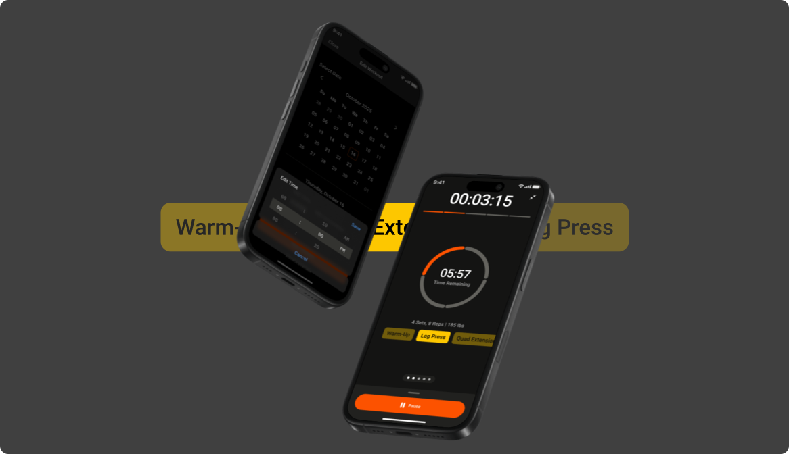
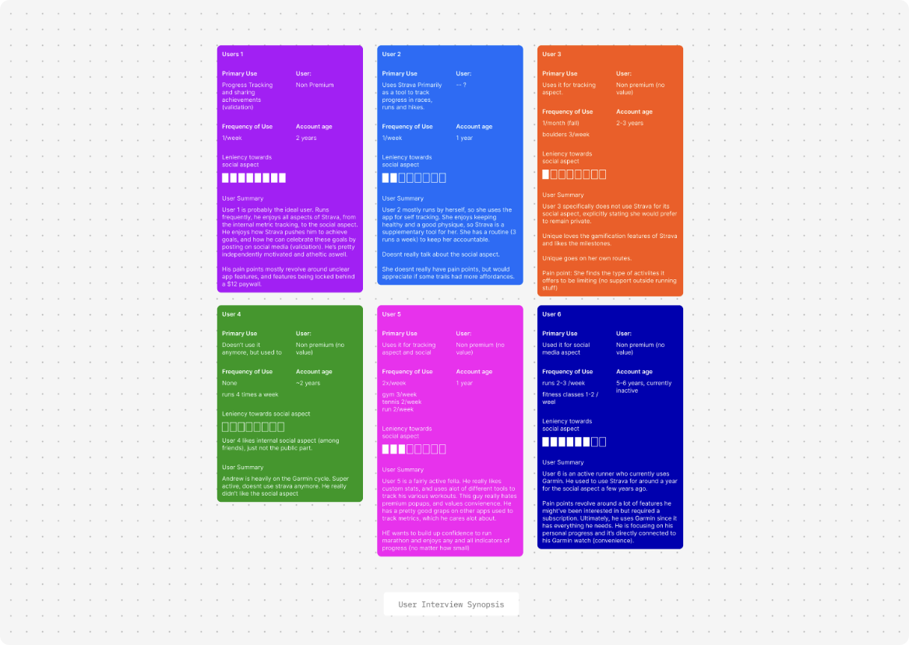

Strava Feature Design
Timeline
Fall 2025, 3 weeks
Role
UX/UI Designer
Team
4 Designers
Skills
- User Research
- UX/UI Designer
- Prototype
How can Strava be a one-stop shop for athletes?
Strava is a performance tracking app for serving as a digital platform and community for athletes. My team and I developed a workout builder feature to help athletes curate their own personal workouts.

There is no feature to support workout planning…
Strava lacks a system to plan non-cardio workouts, creating a fragmented experience that forces users to rely on external apps for strength training. This disconnect hinders Strava's ability to be a comprehensive fitness platform, limiting user engagement and retention.
After interviewing 6 users, it revealed:
83%
of users switch between multiple apps to plan and track workouts
66%
of users felt the paywall blocked features they would use
50%
of usuers enjoy the social and sharing feature of Strava
An all-in-one workout builder and planner.
A workout builder lets users plan cross-training sessions, then track and share them, all within Strava. The feature includes a workout builder for creating custom workouts, a workout planner for scheduling sessions, and a workout tracker for logging performance. This solution enhances Strava's value as a comprehensive fitness platform, improving user engagement and retention.

Share and schedule.
To maintain the social aspect of the workout builder, I introduced a share and schedule feature that lets users send curated workout plans to friends and schedule sessions together.
This preserves the social motivation interviewees were excited about, while adding practical planning functionality.

Colour coded blocks.
Exercises are labeled and colour-coded, with each colour tied to the custom block builder, helping users instantly recognize the type of activity they’re engaging in through consistent visual cues.

Walk-through video of the Strava workout builder feature, showcasing the user flow and key interactions.
Conducted 6 user interviews to gather user behaviours.
To get a better understanding of users painpoints, I conducted through user interviews with past and present Strava users. Common painpoint among users were the need to use multiple platforms to plan workouts and a want for more social features.

Do your research, and a lot of it.
You don't always have to reinvent the wheel to solve a problem; sometimes the best approach is to build on what already works. After weeks of research and product development, I learned that the simplest solutions are often the most effective.
Communication, timelines and delegation are key.
3 weeks and not a single call. We simply relied on clear communication about each other's external priorities and keeping each other up to date on progress.